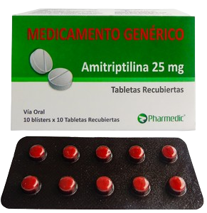
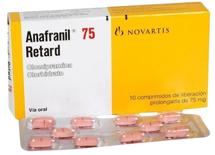
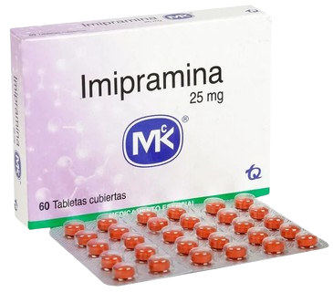

Amitriptilina
Antidepresivo tricíclico y un analgésico. Efectos bloqueantes sobre los canales iónicos de sodio, y el potasio.
Mecanismo de Acción
Evita la recaptación y la inactivación de la noradrenalina y la serotonina en las terminaciones nerviosas.
Indicaciones
Depresión
Neuropatía diabética
Neuralgia postherpética
TDAH
Enuresis nocturna
Migraña.
Contraindicaciones
Hipersensibilidad IAM
Trastornos del ritmo cardíaco
Concomitante con IMAO
Hepatopatía grave Niños < 6 años
Presentaciones
-
Tabletas de 25 mg
Dosis terapéutica
-
75 a 200 mg/día
Cuidados de enfermería
Realizar EKG antes de inicio del tratamiento.
Si se administra con tramadol aumenta riesgo de convulsiones y síndrome serotoninérgico.
Administrar el medicamento con alimentos para minimizar la irritación gástrica.
Si el paciente ha tomado el medicamento durante un período largo, necesitará disminuir gradualmente la dosis antes de dejar el medicamento.
Efectos adversos
Agresión, confusión, somnolencia, temblor, disartria, alteración de la atención, disgeusia (mal sabor persistente en la boca), bloqueo de rama o auriculoventricular, prolongación de intervalo QT, prolongación complejo QRS, hiponatremia, sequedad de la boca, visión borrosa, trastornos urinarios, sensación de sed.
Clomipramina
De los antidepresivos triciclícos es el inhibidor más selectivo y potente de la serotonina (5-HT).
Mecanismo de Acción
Inhibe la recaptación neuronal de noradrenalina y serotonina liberadas en hendidura sináptica
Indicaciones
Depresión mayor
Trastorno obsesivos
Fobias
Narcolepsia con cataplejía
Enuresis nocturna
Contraindicaciones
Hipersensibilidad
Concomitante con IMAO
IAM reciente
Síndrome de QT largo
Presentaciones
-
Tabletas de 25 y 75 mg
Dosis terapéutica
-
100 a 150 mg/día
Cuidados de enfermería
Realizar un EKG previo al inicio del tratamiento.
Controlar la tensión arterial antes del tratamiento, realizar examen físico y estudios de laboratorio de rutina (hemograma completo, electrolitos séricos y hepatograma).
Vigilar aparición de alucinaciones en ancianos y pacientes con Parkinson.
Vigilar el grado de sedación, especialmente al inicio del tratamiento.
Evitar su suspensión brusca debido al riesgo de aparición de síntomas de retirada.
Efectos adversos
Mareo, fatiga, confusión, agitación, manía, hipomanía, pérdida de memoria, despersonalización, disartria, hipertonía, galactorrea. Produce síntomas de abstinencia: disnea, letargo, cólico, irritabilidad, hipotensión o hipertensión, temblor/espasmos/convulsiones, durante las primeras horas o días.
Imipramina
Antidepresivo tricíclico que ocasionalmente se utiliza para el tratamiento del dolor neuropático.
Mecanismo de Acción
Inhibe la recaptación neuronal de noradrenalina y serotonina.
Indicaciones
Crisis de pánico
Síndrome doloroso crónico
Depresión
Enuresis nocturna
Contraindicaciones
Hipersensibilidad
IAM reciente
Concomitancia con IMAO
Niños < 6 años
Presentaciones
-
Tabletas de 10 y 25 mg
Dosis terapéutica
-
75 a 100 mg/día
Cuidados de enfermería
Si va a iniciar un IMAO, suspender la Imipramina e Iniciar 14 días después el IMAO.
Monitorear los posibles efectos secundarios.
Control de tensión arterial.
Vigilar riesgo suicida.
Realización de electrocardiogramas de forma periódica, debido a su cardiotoxicidad.
Efectos adversos
Sequedad en la boca, sedación, retención urinaria, visión borrosa, mareos, náuseas, vómitos, estreñimiento, dolor de cabeza, aumento o disminución de la tensión arterial, taquicardia, hiperhidrosis. Glaucoma, hipernatremia.